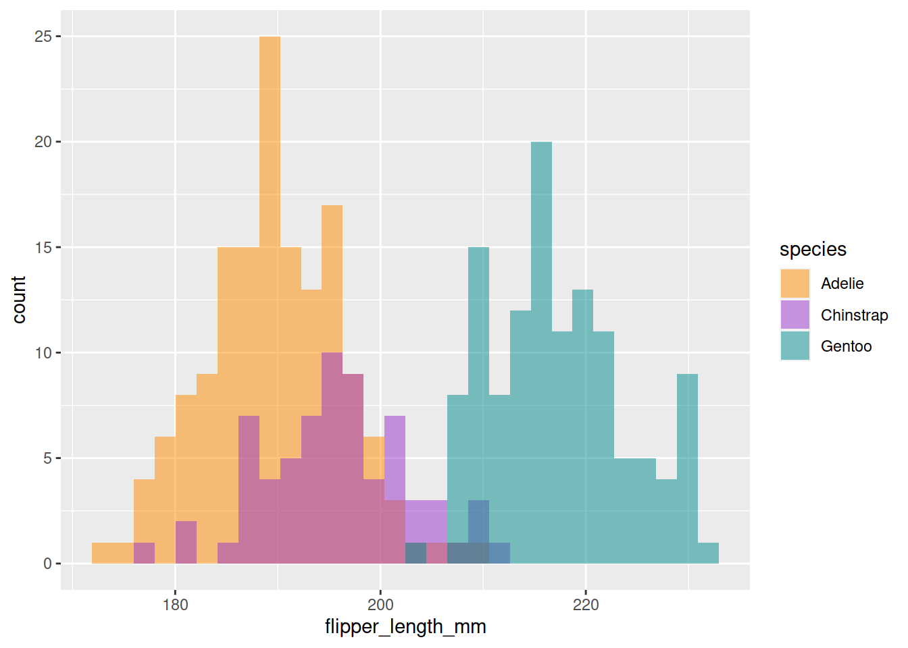

Sam the Hero
By Monty Reynolds in Natural Language Processing
January 3, 2021
knitr::opts_chunk$set(fig.path = "figs/", collapse = TRUE)An empty post
woot
Yay fontawesome works.
Well let’s try penguins
library(tidyverse)
## ── Attaching packages ─────────────────────────────────────── tidyverse 1.3.1 ──
## ✔ ggplot2 3.3.5 ✔ purrr 0.3.4
## ✔ tibble 3.1.6 ✔ dplyr 1.0.8
## ✔ tidyr 1.2.0 ✔ stringr 1.4.0
## ✔ readr 2.1.2 ✔ forcats 0.5.1
## ── Conflicts ────────────────────────────────────────── tidyverse_conflicts() ──
## ✖ dplyr::filter() masks stats::filter()
## ✖ dplyr::lag() masks stats::lag()
library(palmerpenguins)ggplot(data = penguins, aes(x = flipper_length_mm)) +
geom_histogram(aes(fill = species), alpha = 0.5, position = "identity") +
scale_fill_manual(values = c("darkorange","darkorchid","cyan4"))
## `stat_bin()` using `bins = 30`. Pick better value with `binwidth`.
## Warning: Removed 2 rows containing non-finite values (stat_bin).